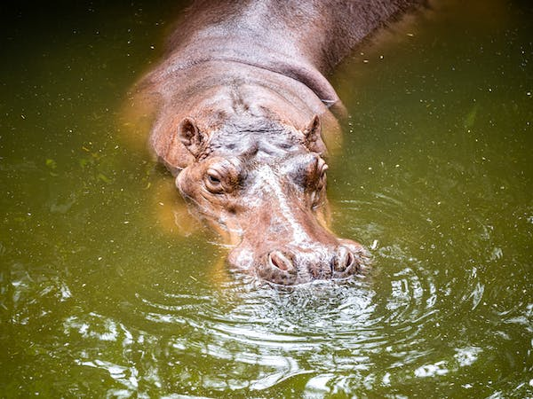
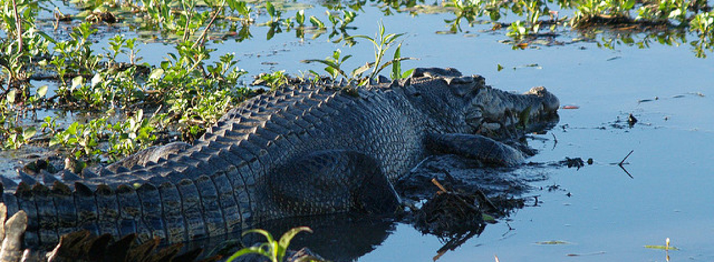
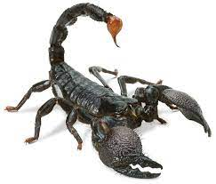
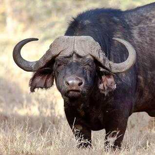

5 most dangerous animals on earth
1. Hippopotamus

Everything About Me!
- Hippos are the third largest mammals on earth!
- Hippos are strong swimmers.
- Hippos are hebivores.
- Hippos are most active at night!
- Hippos produce their own sunblock!
2. Crocodiles

Everything About Me!
- Crocodiles are the largest reptiles on earth!
- They really do produce tears!
- They Can't chew Food!
- They swallow stones to improve Digestion!
- Crocodiles have Special Hearts!
3. Scorpions

Everything About Me!
- Scorpions were around long before the first Dinosaurs!
- They are not Insects.
- Scorpions glow in UV Light!
- Some Scorpions can go a Year Without Food!
- Their Venom can include Dozens Of Different Toxins!
4. Cape Buffalos

Everything About Me!
- Cape Buffalos can be very dangerous.
- Cape Buffalos are fantastic swimmers!
- Cape buffalos have a very intricate social structure.
- They utilise teamwork!
- Cape Buffalos are known to kill Lions!
5. Brazillian Wandering Spider

Everything About Me!
- It is the deadliest spider in the world!
- They are also known as the banana spider!
- A small amount of their venom could kill a human!
HOPE YOU ENJOYED THE WEBSITE!💗💗